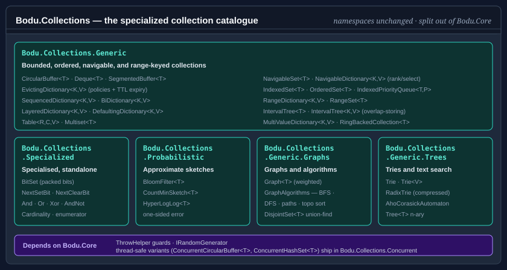

Bodu.Collections

Bodu.Collections is the specialized generic-collection catalogue of the Bodu suite and a member of the Core Foundations topic. It ships the bounded, ordered, navigable, range-keyed, graph, tree, and probabilistic collections that were split out of Bodu.Core — the namespaces are unchanged (Bodu.Collections.Generic and its siblings), only the package boundary moved. The package depends on Bodu.Core for shared primitives such as ThrowHelper and the IRandomGenerator abstraction; see the package matrix for the full dependency map.
The thread-safe variants — ConcurrentCircularBuffer<T>, ConcurrentHashSet<T>, and the lock-striped ConcurrentEvictingDictionary<TKey,TValue> bounded cache in the Bodu.Collections.Generic.Concurrent namespace — ship in the companion Bodu.Collections.Concurrent package, which depends on this one.

Namespaces and headline types
Bodu.Collections.Generic
Bounded, ordered, navigable, and range-keyed collections, many built around a shared ring-backed primitive.
| Type | Purpose |
|---|---|
| CircularBuffer<T> | Fixed-capacity FIFO ring. Configurable to either silently overwrite or throw when full. |
| Deque<T> | Double-ended queue with O(1) AddFirst / AddLast / RemoveFirst / RemoveLast. The AllowGrow flag toggles between auto-resize and fixed-capacity modes; when fixed, DequeOverflowPolicy selects reject-or-evict overflow behavior. |
| SegmentedBuffer<T> | Segmented buffer for streaming scenarios where total length is not known up front. |
| RingBackedCollection<T> | Abstract base shared by CircularBuffer<T> and Deque<T>. Extension point for new ring-backed collections. |
| EvictingDictionary<TKey, TValue> | Capacity-bounded dictionary with FIFO, LRU, LFU, MRU, Random, or Second-Chance eviction, plus optional time-based (TTL) expiry. Drop-in cache primitive with standard dictionary semantics. |
| EvictingDictionaryPolicy | Enum selecting the eviction policy: FirstInFirstOut, LeastRecentlyUsed, LeastFrequentlyUsed, MostRecentlyUsed, RandomReplacement, SecondChance. |
| SequencedDictionary<TKey, TValue> | Unbounded insertion- or access-ordered dictionary (Java LinkedHashMap shape) with O(1) access to and removal of the first and last entries. Optional access-order mode underpins hand-built LRU caches. |
| BiDictionary<TKey, TValue> | Bidirectional one-to-one map (Guava BiMap shape) with O(1) lookup in both directions and a live Inverse view sharing the same storage. Duplicate-value conflicts resolve by a construction-time Throw / Replace policy. |
| LayeredDictionary<TKey, TValue> | Live read-through view over an ordered list of dictionaries (Python ChainMap shape): the first layer containing a key wins on read, all writes go to the first layer only, and removing a shadowing entry unshadows the deeper value. |
| DefaultingDictionary<TKey, TValue> | Dictionary with a construction-time value factory (Python defaultdict shape): the indexer getter materializes, stores, and returns a default for a missing key; every other member sees only actually-stored entries. |
| Table<TRow, TColumn, TValue> | Two-key row/column map (Guava Table shape) whose point is the projections: live Row / Column read-only dictionary views, RowKeys / ColumnKeys, and per-row RowMap() iteration over a row-major store. Column-axis operations scan every row (O(rows)); empty rows are pruned automatically. |
| IndexedSet<T>, OrderedSet<T>, IndexedPriorityQueue<TElement, TPriority> | Index-aware set and priority-queue variants for lookup-by-position and key-based priority updates. |
| MultiValueDictionary<TKey, TValue>, Multiset<T> | Multi-map and multi-set semantics over IEqualityComparer<TKey>. |
| NavigableSet<T> | Comparer-ordered set over an order-statistic red-black tree: O(log n) nearest-neighbour queries (TryGetFloor / TryGetCeiling / TryGetHigher / TryGetLower), rank/select (IndexOf / GetAt), CountInRange, Min/Max, and live fail-fast Ascending / Descending / Range views. |
| NavigableDictionary<TKey, TValue> | Key-sorted dictionary over the same order-statistic red-black tree: O(log n) nearest-neighbour entry queries (TryGetFloorEntry / TryGetCeilingEntry / TryGetHigherEntry / TryGetLowerEntry, plus key-only variants), rank/select (IndexOfKey / GetAt), CountInRange, MinEntry/MaxEntry, and live fail-fast Ascending / Descending / Range entry views. Null keys rejected; null values allowed. |
| Range<T>, RangeDictionary<TKey, TValue>, RangeSet<T> | Range-keyed lookups for ordered or interval-valued keys. |
| IntervalTree<T>, IntervalTree<TKey, TValue> | Overlap-storing interval trees over a max-endpoint augmented red-black tree: closed [low, high] intervals that may freely overlap, O(log n + k) stabbing (QueryPoint) and window (QueryOverlaps) queries, O(log n) Intersects / IntersectsPoint, duplicate intervals permitted (per-node count / per-node value list). The only member of the range family that stores overlaps. |
Bodu.Collections.Specialized
The members of the package that serve a specialised purpose rather than acting as general-purpose containers. The packed bit set references nothing else in the package, and nothing else references it — which is why it sits apart from the catalogue rather than inside it. See the bit set guide and the Bodu.Collections.Specialized overview. (The RFC 6962 Merkle tree formerly in this namespace now ships as MerkleTree in Bodu.Security.Cryptography.)
| Type | Purpose |
|---|---|
| BitSet | Growable packed bit set with Java BitSet semantics: auto-grow on Set/Flip, reads beyond capacity return false, NextSetBit / NextClearBit / Cardinality queries, in-place And / Or / Xor / AndNot, and a non-boxing enumerator over set-bit indices. |
Bodu.Collections.Probabilistic
Approximate "sketch" structures that trade exactness for a fixed memory footprint — each is sized once from its constructor arguments and carries a quantified, one-sided error bound. See the Probabilistic collections guide and the Bodu.Collections.Probabilistic overview.
| Type | Purpose |
|---|---|
| BloomFilter<T> | Approximate set membership sized from an expected item count and target false-positive rate. No false negatives — added elements are always reported present; never-added elements are misreported at roughly the design rate. Supports UnionWith merging and version-checked export/import. |
| CountMinSketch<T> | Approximate per-element frequency counting sized from epsilon / delta. Never underestimates; with probability at least 1 − δ an estimate is at most the true count plus ε · TotalCount. Supports MergeWith (cell-wise sum) and export/import. |
| HyperLogLog<T> | Approximate distinct-element (cardinality) counting in 2^precision one-byte registers with ~1.04/√m relative standard error. MergeWith (register-wise max) is lossless and never double-counts shared elements. |
Bodu.Collections.Generic.Graphs
Graphs and graph algorithms. See the Graphs and graph algorithms guide and the Bodu.Collections.Generic.Graphs overview.
| Type | Purpose |
|---|---|
| Graph<T> | Directed or undirected graph with optional non-negative edge weights. |
| GraphAlgorithms | BFS / DFS traversal, shortest path, topological sort, and connected components over the read-only graph views. |
| DisjointSet<T> | Union-find (disjoint-set) with path compression for connectivity and components. |
Bodu.Collections.Generic.Trees
The trie family and an n-ary tree. See the Tries and text search guide and the Bodu.Collections.Generic.Trees overview.
| Type | Purpose |
|---|---|
| Trie, Trie<TValue> | A string set and a string-keyed map with prefix queries (StartsWith, KeysWithPrefix). |
| RadixTrie, RadixTrie<TValue> | Path-compressed (PATRICIA-style) siblings of the tries with the identical member-for-member surface: string edge labels split on insert and re-fuse on remove, so node count tracks key count — the better fit for long keys with sparse branching (URLs, paths, identifiers). |
| AhoCorasickAutomaton, AhoCorasickAutomaton<TValue> | Immutable multi-pattern text matchers built once from a pattern set: EnumerateMatches reports every (overlapping, nested) occurrence of every pattern in one O(text + matches) pass, in a pinned (end index, pattern length) order, with span-based CountMatches / HasMatch conveniences; the keyed variant carries a value per pattern onto each match. |
| Tree<T> | A mutable n-ary tree node with stack-safe pre-/post-/level-order traversals. |
Bodu.Collections.Generic.Concurrent (companion package)
The thread-safe variants — the lock-free ConcurrentCircularBuffer<T>, the lock-free split-ordered ConcurrentHashSet<T>, and the lock-striped ConcurrentEvictingDictionary<TKey, TValue> bounded cache (all six eviction policies, optional TTL, single-flight GetOrAdd) — ship in the companion Bodu.Collections.Concurrent package, which depends on Bodu.Collections.
Scenarios this library covers
| Scenario | Reach for |
|---|---|
| Fixed-capacity FIFO ring buffer (single-threaded) | CircularBuffer<T> |
| Double-ended queue with O(1) ends | Deque<T> |
| LRU / LFU / FIFO / MRU / Random / Second-Chance cache | EvictingDictionary<TKey, TValue> + EvictingDictionaryPolicy |
| Cache entries that expire after a time-to-live | EvictingDictionary<TKey, TValue> + EvictingDictionaryExpiration |
| Index-aware set with O(1) lookup-by-position | IndexedSet<T> |
| Nearest-neighbour, rank, and range queries over sorted data | NavigableSet<T>, NavigableDictionary<TKey, TValue> |
| Range-keyed lookup table | RangeDictionary<TKey, TValue>, RangeSet<T> |
| Intervals that overlap — stabbing and window queries | IntervalTree<T>, IntervalTree<TKey, TValue> |
| Multi-map / multi-set semantics | MultiValueDictionary<TKey, TValue>, Multiset<T> |
| Two-way lookup between unique keys and unique values | BiDictionary<TKey, TValue> |
| Priority queue with in-place priority updates (Dijkstra, A*) | IndexedPriorityQueue<TElement, TPriority> |
| Prefix queries and autocomplete over string keys | Trie, RadixTrie |
| Find every occurrence of many patterns in one pass | AhoCorasickAutomaton |
| Approximate membership / frequency / distinct counts in fixed memory | BloomFilter<T>, CountMinSketch<T>, HyperLogLog<T> |
| Graph traversal, shortest path, topological sort | Graph<T> + GraphAlgorithms |
| Thread-safe FIFO ring, unique set, or bounded cache | ConcurrentCircularBuffer<T>, ConcurrentHashSet<T>, ConcurrentEvictingDictionary<TKey, TValue> (in Bodu.Collections.Concurrent) |
Design principles
A handful of conventions run through the whole package; knowing them up front explains why the types look the way they do.
- One toggle, not two classes. Where a collection has to choose between reject and make room on overflow, that choice is a single settable property —
AllowOverwriteon CircularBuffer<T>,AllowGrow(with DequeOverflowPolicy) on Deque<T> — rather than two parallel types. The toggle can be flipped at runtime (grow during warm-up, lock down for steady state), and every throwing operation has aTry…peer that substitutes afalsereturn. - Fail-fast where it is cheap, snapshot where it is not. The single-threaded collections detect concurrent structural mutation with a version counter and throw InvalidOperationException from the enumerator — the BCL contract. The lock-free ConcurrentCircularBuffer<T> (in the companion Bodu.Collections.Concurrent package) instead enumerates a coherent snapshot and never throws, because a fail-fast token cannot be maintained without a lock.
- Struct enumerators. Every collection's
GetEnumerator()returns astruct, so aforeachover a concrete-typed variable allocates nothing; enumerating through anIEnumerable<T>reference boxes as usual. - Reads can mutate. Recency-based caches (EvictingDictionary<TKey, TValue> under LRU/MRU/LFU/SecondChance, SequencedDictionary<TKey, TValue> in access-order mode) update ordering metadata on a successful lookup. That is why even concurrent read-read on these types needs external synchronisation.
- Validation flows through one helper. Every public entry point validates its arguments through
Bodu.Core's ThrowHelper, so exception type, message, and parameter-name capture stay uniform across the suite. - Pluggable randomness, never a global. Helpers that need randomness (
RandomReplacementeviction, shuffles) accept an IRandomGenerator rather than reaching for a static Random, so tests can inject a deterministic source.
Where to go next
- Core concepts — the collection vocabulary the rest of the documentation assumes.
- Getting started — install the package and run a minimal sample for the headline types.
- Choosing a collection — the decision guide across the whole catalogue.
- Collections guides — recipe-style walk-throughs for every headline type.
- Bodu.Collections.Generic API reference — full namespace overview.
- Bodu.Collections.Concurrent introduction — the thread-safe companion package.
- Bodu.Core introduction — the foundation package this one builds on.
- Core Foundations topic — how the three packages and the
Bodu.Textnamespace utilities fit together.